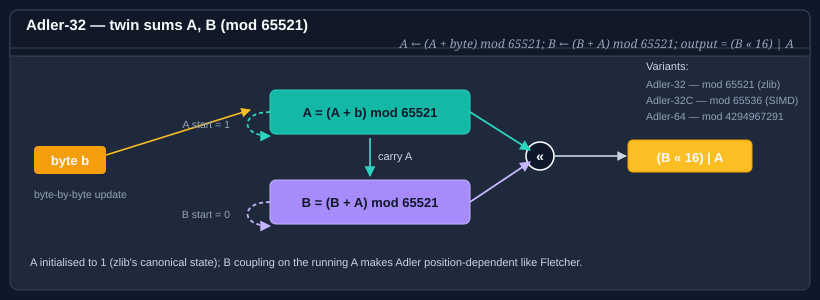

Using Adler
The Adler checksum — introduced by Mark Adler for zlib — maintains two running sums, A and B, reduced modulo a prime. It is cheap, position-dependent (so it catches transpositions), and the canonical Adler32 is the checksum embedded in every zlib stream.

Bodu.IO.Hashing provides three variants:
| Type | Width | Modulus | Intended use |
|---|---|---|---|
| Adler32 | 32 bits | 65521 (largest prime below 2¹⁶) | Canonical Adler-32 — zlib, PNG, rsync. |
| Adler32C | 32 bits | 65536 | SIMD-friendly variant; faster on vector pipelines, not wire-compatible with Adler-32. |
| Adler64 | 64 bits | 4294967291 (largest prime below 2³²) | Extended width for long buffers where a 32-bit space is uncomfortable. |
All three derive from NonCryptographicHashAlgorithm via a shared Adler<T> base and live in the Bodu.IO.Hashing.Checksums namespace.
Note
Add using Bodu.IO.Hashing.Checksums; for Adler32 / Adler32C / Adler64, not using Bodu.IO.Hashing;.
Pattern 1 — compute a digest in one call
using System.Text;
using Bodu.IO.Hashing.Checksums;
byte[] data = Encoding.UTF8.GetBytes("the quick brown fox");
var adler = new Adler32();
adler.Append(data);
byte[] digest = adler.GetCurrentHash();
string hex = Convert.ToHexString(digest); // 4 bytes, 8 hex characters, big-endian
Swap Adler32 for Adler64 when you need the wider space, or for Adler32C when you want the SIMD-friendly modulus and don't need interoperability with zlib.
Pattern 2 — the Append / GetCurrentHash / Reset lifecycle
using Bodu.IO.Hashing.Checksums;
var adler = new Adler32();
adler.Append(chunk1); // update A and B
adler.Append(chunk2);
byte[] partial = adler.GetCurrentHash(); // snapshot, non-destructive
adler.Append(chunk3); // state preserved after GetCurrentHash
byte[] full = adler.GetCurrentHash();
adler.Reset(); // A = 1, B = 0 — zlib's canonical initial state
GetCurrentHash finalizes on a copy of the accumulators, so calling it mid-stream is cheap and safe.
Pattern 3 — streaming a file
using Bodu.IO.Hashing.Checksums;
var adler = new Adler32();
using (FileStream fs = File.OpenRead("archive.bin"))
{
byte[] buffer = new byte[64 * 1024];
int read;
while ((read = fs.Read(buffer, 0, buffer.Length)) > 0)
{
adler.Append(buffer.AsSpan(0, read));
}
}
byte[] fingerprint = adler.GetCurrentHash();
There is no restriction on chunk size — the two-sum update is byte-by-byte internally, so arbitrary boundaries are safe.
Pattern 4 — wire-compatible zlib checksum
A zlib stream carries an Adler-32 trailer in big-endian byte order. GetCurrentHash returns the digest in the BCL-standard big-endian layout already, so you can write it to the stream directly:
using Bodu.IO.Hashing.Checksums;
var adler = new Adler32();
adler.Append(deflateOutput);
// 4-byte big-endian Adler-32 trailer, per RFC 1950 §2.2.
byte[] trailer = adler.GetCurrentHash();
outputStream.Write(trailer);
Picking a variant
- Need interoperability with zlib, PNG, rsync, or any tool that speaks RFC 1950? Use Adler32. The modulus (65521) and initial state (
A=1, B=0) are fixed by the specification. - Hashing large buffers in a hot loop on a SIMD-capable CPU? Use Adler32C. The power-of-two modulus removes the
% 65521reduction and lets auto-vectorization stay vectorized. The digest is not interchangeable with Adler-32. - Checksumming very long streams where a 32-bit space is uncomfortable? Use Adler64. Four bytes of digest become eight.
Error-detection profile and the short-input weakness
Adler maintains A (the running byte sum, starting at 1) and B (the running sum of A). The prime modulus (65521) of the canonical variant spreads error patterns more evenly than the next-larger composite would — its single advantage over a power-of-two reduction. But the structure has a well-known weakness on short inputs:
- Each byte first lands in
A, andBonly accumulates the runningA. For a short messageAstays small, soBgrows slowly and the high bits of the 32-bit digest barely move. The effective digest space is far narrower than 32 bits until the payload is a few hundred bytes long. - This is the reason RFC 1950 carries Adler-32 only as a trailer over an already-substantial deflate stream, and the reason a CRC-32 is the better checksum for short frames.
Like Fletcher, Adler catches every single-bit error and every adjacent-byte transposition, and like Fletcher it offers no per-position burst guarantee. Choose it for zlib interoperability or for long, benign payloads — not for short frames on a noisy link.
Important
Adler32C trades the prime modulus for 2^16, which removes the % 65521 reduction and keeps an auto-vectorised loop vectorised — but the power-of-two modulus weakens error coverage further and the digest is not interchangeable with a real Adler-32. Use it only inside your own system, never on a zlib/PNG/rsync wire.
Adler vs Fletcher vs CRC
- Adler is position-dependent and fast; weaker than CRC on short inputs (the first few bytes leave
Asmall, soBgrows slowly). - Fletcher uses a similar twin-accumulator structure with word-sized rather than byte-sized updates; comparable error-detection on uncorrelated noise, slightly different distribution.
- CRC is polynomial-arithmetic over GF(2); better at catching the kind of burst errors common on physical links, and it is what wire formats usually specify.
All three are non-cryptographic — none of them resists a motivated adversary. If you need authentication, see the cryptography hashing guide.
Where to go next
- Using Fletcher — the other twin-accumulator family.
- Using CRC — the polynomial-arithmetic family.
- Bodu.IO.Hashing namespace page — key types and design notes.
- Hashing & Cryptography guides — every guide in this topic, across Bodu.IO.Hashing and Bodu.Security.Cryptography.